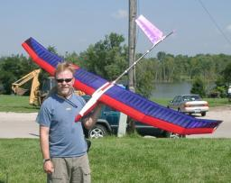
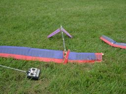

The Majestic RES is a rudder/elevator/spoiler-only 3-meter built-up plane with a semi-reinforced spar from Laser Arts. It is a solid, strong woody plane that performs and thermals wonderfully. I bought mine from a club-mate getting out of the hobby, and after much sanding, lightening and re-covering I managed to get it down to a decent weight.
 However, as the second photo shows, I had an unfortunate “incident” with it at the 2004 BSS Mid-Ams, which turned out to be a frayed (on the inside) negative battery wire. Note to self: ALWAYS WIGGLE YOUR BATTERY WIRES BEFORE LAUNCH.